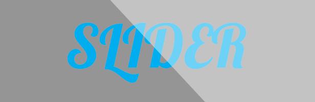
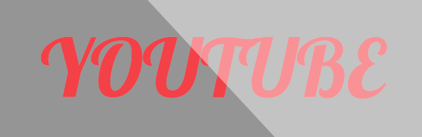
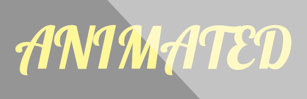
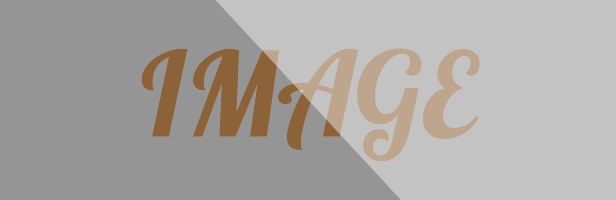
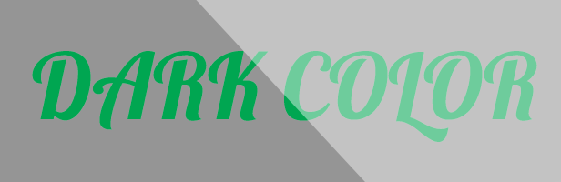
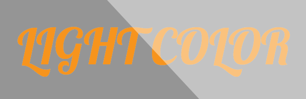
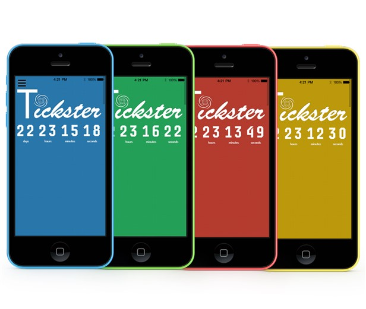
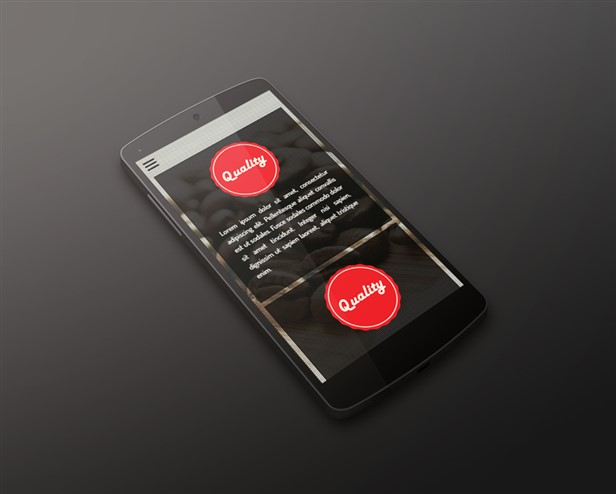
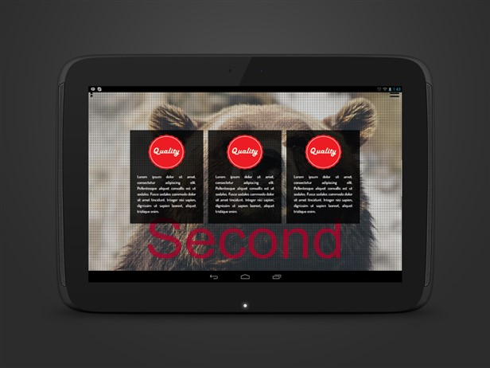

Tickster is a responsive, one-page template with a countdown timer. It has been designed using a modular approach. Therefore, any number of new sections can be added to the template fairly easily. However, the given sections may be quite enough for most people's needs. Use it as is, or tweak it. Either way, it's going to dfulfill your needs!
If you like the theme, please rate it!

Background Styles







Features
Fully Respnsive


- 5 Unique Styles
- 20 Preset Schemes
- Unlimited Color Possibilities
- Responsive Design
- Retina ready
- Modular Approach
- Fully Documented
- SASS, HTML5, CSS3, JS
- CSS3 Animations
- Foundation 5 Support
- Cross-Browser Support
- Google Chrome
- Mozilla Firefox
- Opera
- Internet Explorer
Credits
- Full page by Alvaro Trigo
- Animate by daneden
- Tubular by seanmccambridge
- Google Fonts
- Font-Awesome icons
- Tweenlite and Easepack by GreenSock
- All photographs used in the demo were taken from unsplash.com
Note
Please note that the template files do not include the background images used in the demo. Please use your own images for that purpose.